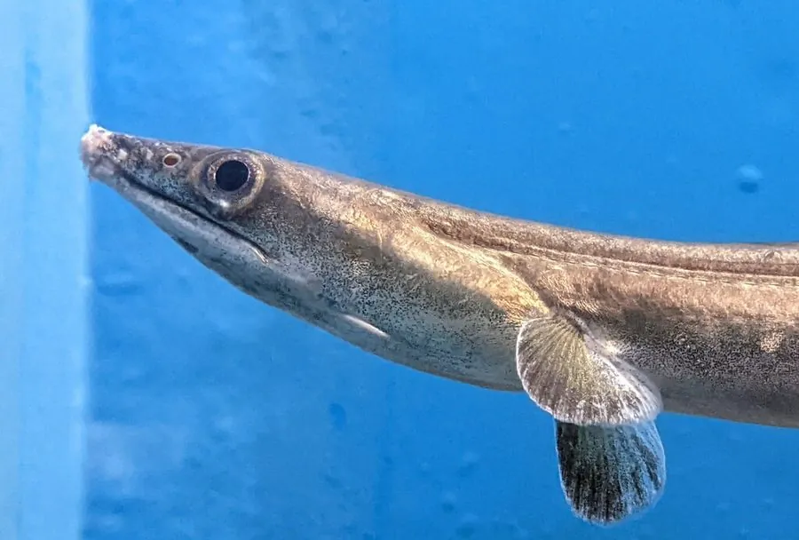

鱼类 · 动物界
海鳗 Muraenesox cinereus

西北太平洋近岸的大型鳗鱼，体呈长圆筒形、口大牙尖锐，性凶猛，是重要的食用鱼，俗称“海鳗鲡”。
- 分类
- 门脊索动物门纲辐鳍鱼纲目鳗鲡目科海鳗科属海鳗属
- 栖息环境
- 近岸沙泥底质、岩礁和河口，白天藏在洞穴或泥沙中
- 地理分布
- 印度洋—太平洋暖水海域，中国沿海、日本和东南亚有分布
- 保护级别
- 暂无评估；中国未列入国家重点保护野生动物名录
物种志
海鳗体呈长圆筒形，尾部侧扁，头大，吻长，口裂大，上下颌长有尖锐的牙齿。体表无鳞，皮肤光滑，体色背部灰褐或黄褐，腹部灰白，背鳍、臀鳍和尾鳍相连。成鱼体长一般 1–1.5 m，最大可达 2.2 m，体重可达 10 kg 以上。
海鳗分布于印度洋—太平洋的暖水海域，中国沿海、日本、朝鲜半岛和东南亚都有分布。它栖息在近岸沙泥底质、岩礁和河口，白天多藏在洞穴或泥沙中，夜间出来捕食，吃小鱼、虾蟹和头足类。海鳗性凶猛，被捕捉时会咬人。它是中国沿海重要的食用鱼，可鲜食、腌制或做鱼丸，鱼鳔可制胶。由于捕捞压力，部分海域资源下降，目前尚无明确的 IUCN 评估。
形态与习性
- 食性小鱼、虾蟹和头足类
- 体长一般 1–1.5 m，最大可达 2.2 m
- 体重最大可达 10 kg 以上
- 活动节律白天藏在洞穴或泥沙中，夜间捕食
- 性情凶猛，被捕捉时会咬人
- 经济价值中国沿海重要食用鱼，可鲜食、腌制和做鱼丸
趣味知识
- 海鳗的背鳍、臀鳍和尾鳍连成一片，像一条连续的裙边。
- 它白天藏在洞穴和泥沙里，夜间才出来捕食。
- 海鳗牙齿尖锐、性情凶猛，渔民捕获时需小心被咬伤。